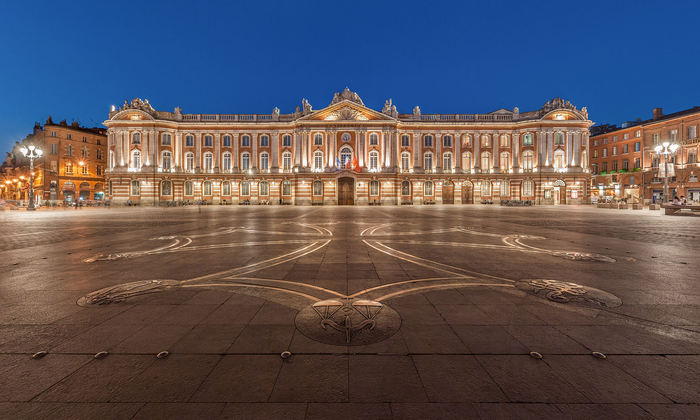
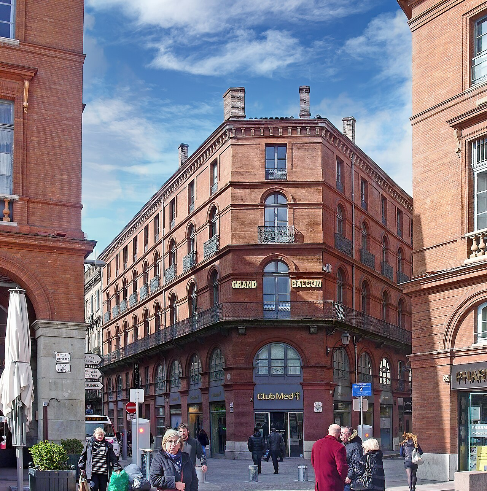

1
9月16日 周三
抵达 Toulouse
倒时差友好的第一晚：入住 Le Grand Balcon，慢走 Capitole 和 Les Carmes。
Toulouse 速写
图卢兹白天是玫瑰色老城，晚上是 Les Carmes 的酒馆小街；同一座城既有 cassoulet 西南炖菜和紫罗兰糖，也有 Airbus 总部和早期航空邮政故事。Saint-Exupéry，也就是《小王子》的作者，年轻时就和这里的航空邮政圈有关。这里不要赶景点，最地道的玩法是市场午餐、河边散步、晚上在修道院里听钢琴。
路线 / 时间 / 执行
路线 / 时间 / 执行
16:35 抵达 Toulouse
- Toulouse-Blagnac Airport 是图卢兹主机场；入境、取行李后直接进市区。
- 机场到 Le Grand Balcon 可打车，第一天不要为了省一点交通费折腾公共交通。
傍晚 入住 + 市中心第一眼
- Le Grand Balcon 在 Capitole 核心区，先办理入住、放行李、简单恢复。
- 步行到 Place du Capitole，这是 Toulouse 市政厅广场，也是老城最直接的第一印象。
晚上 Les Carmes
- 从 Esquirol 沿 Rue des Filatiers / Rue Pharaon 慢慢走到 Les Carmes。
- Les Carmes 是餐厅、wine bar 和 cocktail bar 很密的老城街区；晚餐加一杯酒即可。
预约 / 营业 / 注意
- Le Grand Balcon 已订 9/16-9/18；早餐未购买。
- 第一晚餐厅不强制；Le Genty Magre / L'Heure du Singe 可以当天按体力调整。
- 今晚目标是恢复，不要为了多打卡牺牲睡眠。

Highlight：Les Carmes 夜晚街区
Les Carmes 是 Toulouse 老城里最适合第一晚落地的街区：不需要“看景点”，而是走进一组粉砖小街、餐馆、酒吧和小广场。它比 Capitole 更像本地人晚上会去的地方，街区密度高但不压迫；倒时差时只要找一顿 bistro、饭后走两条街，就能把 Toulouse 的节奏摸到。
打卡 / 吃喝
打卡 / 吃喝
正餐
- Le Genty Magre — 第一晚“正式但不累”的西南法国 bistro；适合鸭、鹅肝、cassoulet 这条线，建议订 20:00 左右。
- L'Heure du Singe — cocktail bar + 小盘晚餐；如果还在倒时差、不想吃太重，选它更灵活。
饭后一杯
- Nasdrovia — 更当代的 cocktail 选择，适合一杯季节鸡尾酒后回酒店。
- Au Père Louis — 1889 年老酒馆，适合老派图卢兹氛围；把它当最后一小杯，不当完整晚餐。
住宿 Highlight：Hôtel Le Grand Balcon
住宿 Highlight：Hôtel Le Grand Balcon

Le Grand Balcon 的特别之处是它把“住在市中心”和 Toulouse 的航空历史连在一起。20 世纪早期 Aéropostale 飞行员从 Toulouse 起飞，把邮件航线推向西班牙、非洲和南美；Saint-Exupéry、Mermoz 这些飞行员都和这里有关。酒店保留/复原了 Saint-Exupéry 记忆点的 32 号房气质，所以它不是普通四星商务酒店，而是住在 Capitole 旁边的“航空时代小注脚”。实际价值也很强：第一晚不用通勤，第二天 Jacobins、Victor Hugo 市场、Garonne 河边都能步行串起来。